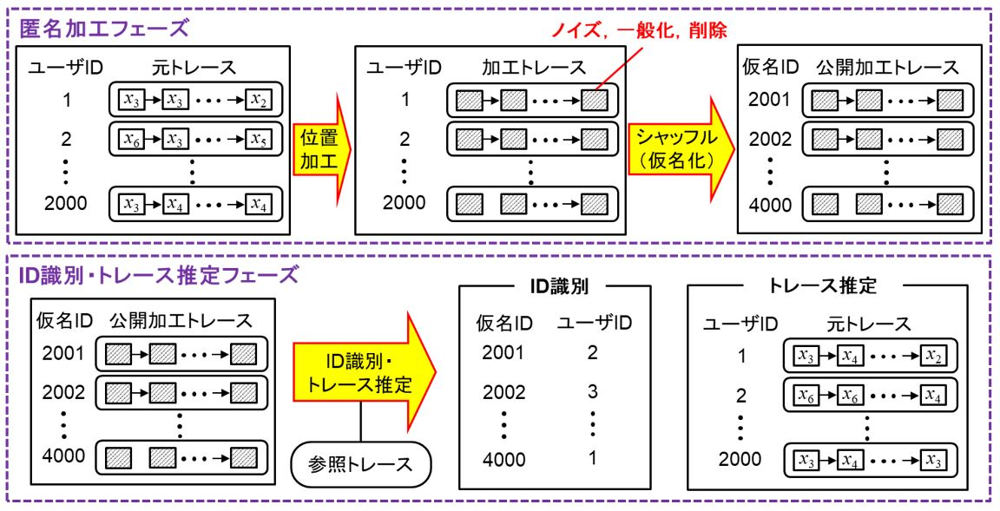

【エントリー時の諸注意】
【参加規定】
- 参加規定をご確認頂いた後、ページ下部の【参加申し込み方法】からエントリーをお願いします
- コンテストはチーム戦として実施します
- 1チームに含まれるメンバーの人数制限はありません
- 複数組織共同での参加が可能です
- 組織・個人名を非公開にした状態での参加が可能です
- 予備選（後述）のみ、本戦（後述）のみの参加が可能です
- チームメンバーは、チーム間で重複があってはなりません
- 各チームで１名、責任者（チームメンバーでなくてもよい）の登録が必要です
- 学生は責任者になれません。研究室の先生にお願いするなどしてください
- 責任者は、チーム間で重複があっても構いません
- 使用するソフトウェアやハードウェアには制限を加えません
- 少なくともチームから1名、CSSに参加登録し、PWS Cupセッションにて発表を行い、発表資料を提出する必要があります（諸事情により参加登録、発表、発表資料の提出ができないチームは、PWS Cup実行委員会(問い合わせ先はページ下部参照)にご相談ください）
【コンテスト概要】
本コンテストでは、位置情報・移動履歴データ(トレース)に対して、安全性と有用性を両立した加工を行って頂きます。

匿名加工フェーズでは、元のトレースの特徴は保ちつつ、トレースから元の個人の識別(ID識別)や元の位置情報を復元(トレース推定)が成功しないように加工します。
ID識別・トレース推定フェーズでは、加工されたトレースから、どの程度ID識別やトレース推定が成功するかを評価します。
データの仕様や加工・評価方法については、以下のコンテスト資料をご参照ください。
【スケジュール】
| エントリー |
PWS Cup 参加エントリー申し込み |
08/16(金) - 09/03(火) |
| 予備選 |
予備選（匿名加工フェーズ） |
09/04(水) - 09/09(月) |
| |
予備選（ID識別・トレース推定フェーズ） |
09/11(水) - 09/17(火) |
| |
予備選結果通知 |
09/19(木) |
| 本戦 |
本戦（匿名加工フェーズ） |
09/26(木) - 10/07(月) |
| |
本戦（ID識別・トレース推定フェーズ） |
10/09(水) - 10/15(火) |
| |
プレゼンテーション |
10/22(火) |
| 結果発表 |
総合結果発表・表彰式 |
10/22(火) |
- エントリーは、ページ下部のエントリーフォームから受け付けます。
- エントリー受付期間終了後にエントリーを希望する場合は、運営(問い合わせ先はページ下部参照)宛に個別にお問い合わせください
- 予備選・本戦ともオンラインで行います
- 10/22(火)は、CSS2019の会場において、プレゼンテーション及びポスターによって、コンテストで用いた手法について発表していただく予定です
【諸注意】
- システムの準備やメンテナンス等の都合により、スケジュールは予告なく変更する場合があります
- 最終的な順位は、予備選と本戦の両方の成績を総合して決める予定です
- 参加申込されたチームには、予備選開始前にルール詳細について連絡いたします
- コンテストで提出されたデータは、コンテスト終了後に公開いたします
- 個人情報の取り扱いについては、PWS Cup 2019 プライバシーポリシーをご参照ください
【参加申し込み方法】
- こちらのフォームに必要な情報をご記入ください。予備選開始前に、コンテスト環境のご案内をさせていただきます。
【問い合わせ先】
【変更履歴】